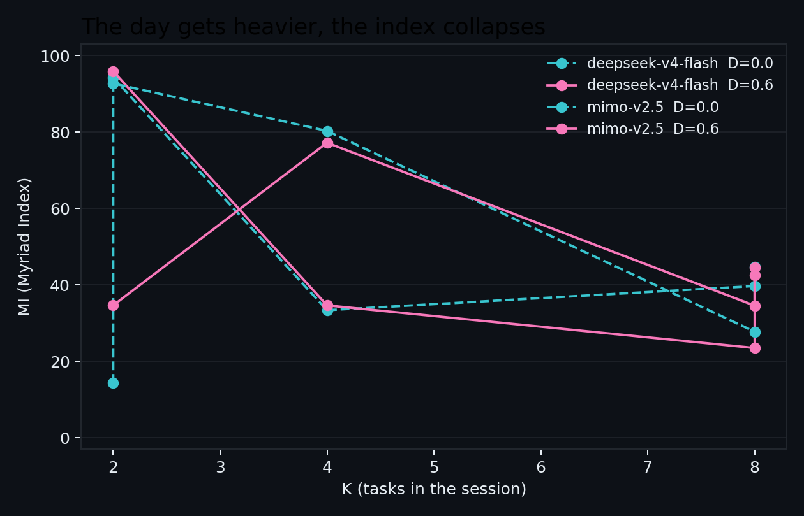
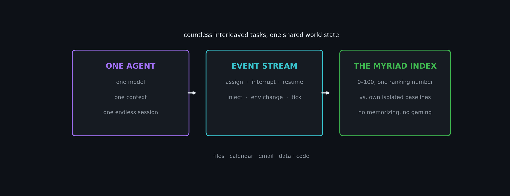

One model. One session. All tasks.
In the far future, AI converges into one model — the single entry point to your digital life. MyriadBench is the first benchmark that measures what actually breaks there: how much of a model's ability survives an endless session of countless interleaved tasks.
Myriad Index (MI, 0–100) by session size K and interleaving density D. Identical task sets across D — only the event stream differs.
| MI by K | K=2 | K=4 | K=8 | K=16 |
|---|---|---|---|---|
| DeepSeek-V4-Flash, D=0 | 94.2 | 33.4 | 44.6 | 25.9 |
| DeepSeek-V4-Flash, D=0.6 | 95.8 | 34.6 | 44.5 | 25.7 |
| MiMo-V2.5, D=0 | 92.7 | 80.2 | 27.7 | 38.6 |
| MiMo-V2.5, D=0.6 | 34.6 | 77.2 | 42.6 | 27.3 |

Every benchmark today measures one of two things: thousands of independent questions (MMLU, HLE) or one goal per session (SWE-bench, OSWorld). But once AI is everyone's single entry point, daily reality is one agent's day — coding, research, scheduling, email and data, interrupted, preempted, mutually dependent. Task-switching costs are proven (EMNLP-2024); never systematically measured. That gap is MyriadBench.

| Component | Weight | Meaning |
|---|---|---|
| R — session retention | 40% | mixed vs isolated performance kept (IC = 1−R) |
| S — state retention | 30% | state-web consistency + resume fidelity |
| T — long-tail robustness | 20% | hardest rarity tier retained |
| E — budget retention | 10% | per-token output vs isolated baseline |
Every component is anchored to the model's own isolated baselines. No memorizing, no gaming, no different models on different tasks — everyone runs the same official suite.
git clone https://github.com/shyringo/myriad-bench && cd myriad-bench python -m harness.cli generate --out data/generated --mix-id demo --seed 7 --K 8 --H 0.6 --D 0.5 --DEP 0.4 --IR 0.3 --NV 0.2 python -m harness.cli run --session data/generated/sessions/demo-s7.json --agent echo --out data/results python -m harness.cli report --session data/generated/sessions/demo-s7.json --trace data/results/demo-s7-echo.json --isolated data/results/isolated --out data/results
No API key? The whole flow runs with --agent echo. Full pilot data (all traces, metrics, figures) ships with every release.